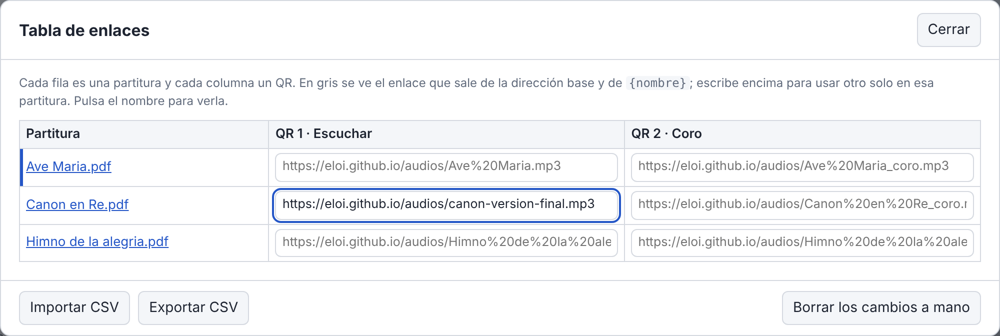
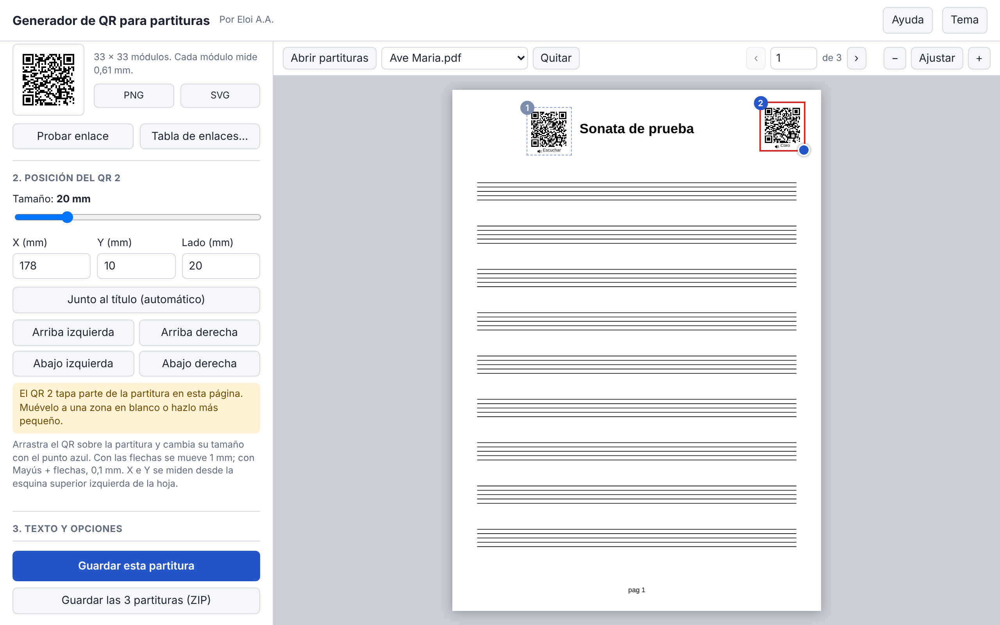
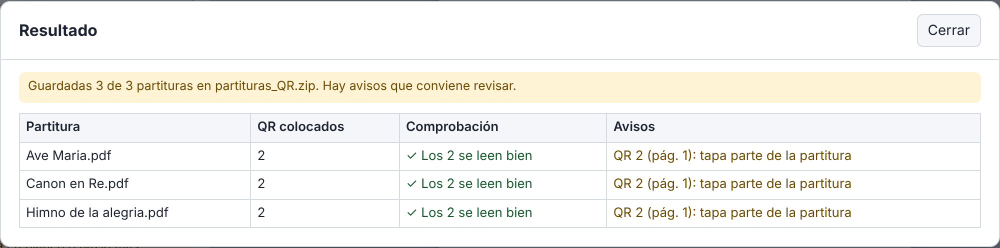
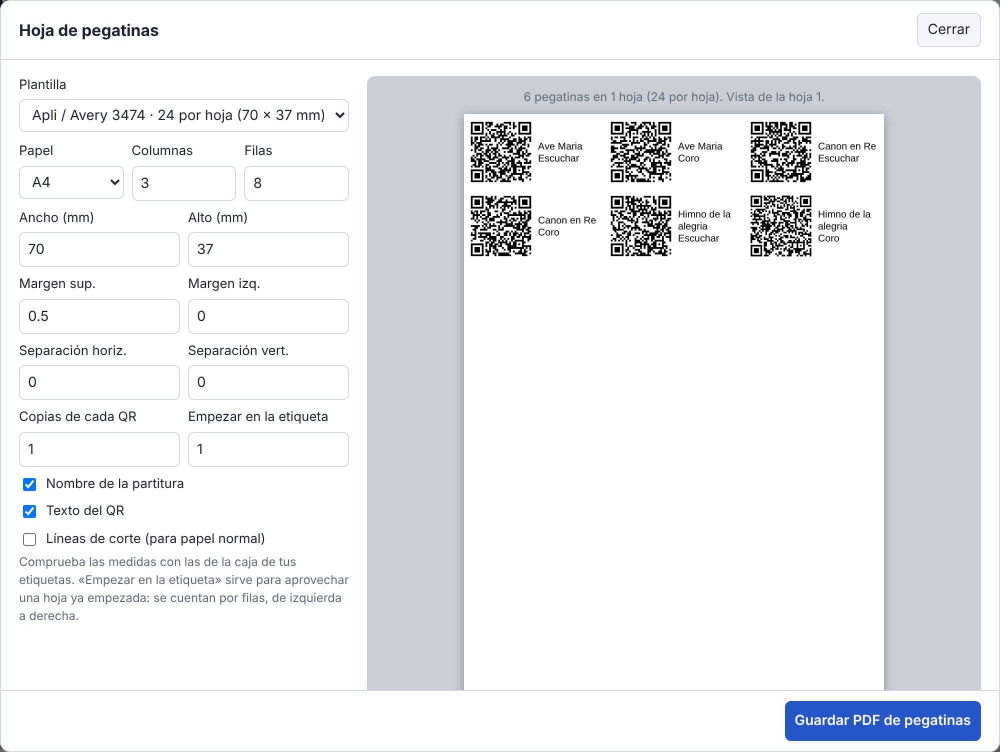

QR-PDF · Manual de uso
Generador de QR para partituras · Por Eloi A.A.
1. Qué es y para qué sirve
QR-PDF crea códigos QR con el enlace a un archivo de audio (por ejemplo, un MP3 subido a internet) y los coloca sobre partituras en PDF. Quien tenga la partitura en papel escanea el código con el móvil y escucha la obra.
- Funciona sin conexión: es un único archivo HTML que se abre con el navegador.
- Nada se sube a internet: las partituras se quedan en tu ordenador.
- El QR se añade como dibujo vectorial, así que se imprime nítido a cualquier tamaño y la partitura no pierde calidad.
- Se guarda siempre una copia nueva; el PDF original no cambia.
- Prepara muchas partituras de una vez, con varios QR en cada una, y comprueba que todos se leen bien.

2. Cómo abrir el programa
- Desde internet: entra en la página del proyecto y pulsa «Abrir el programa».
- Sin internet: descarga
QR-PDF.html, guárdalo donde quieras (disco, USB…) y ábrelo con doble clic. Sirve cualquier navegador actual: Chrome, Edge, Firefox o Safari.
3. Uso en cuatro pasos
- Pega el enlace del MP3 en el recuadro «QR 1». El QR aparece al momento en la miniatura. Con «Probar enlace» se abre la dirección en el navegador para comprobar que funciona.
- Abre la partitura con «Abrir partituras», con «Elegir archivos» o arrastrando el PDF a la ventana.
- Coloca el QR. Lo más cómodo es «Junto al título»; también puedes arrastrarlo (apartado 4).
- Pulsa «Guardar PDF con el QR». Se descarga una copia con el mismo nombre terminado en
_QR.pdf; por ejemplo,sonata.pdf→sonata_QR.pdf.
Puedes guardar tantas veces como quieras: cada copia parte siempre del PDF original, así que nunca se acumulan dos QR.
4. Mover y cambiar el tamaño del QR
| Quiero… | Cómo |
|---|---|
| Ponerlo junto al título | Botón «Junto al título (automático)». Busca el texto más grande de la parte de arriba de la primera página y coloca el QR a su izquierda, centrado en altura. Se calcula en cada partitura. |
| Mover el QR | Arrástralo sobre la partitura con el ratón o con el dedo. Si estaba en automático, pasa a posición manual. |
| Cambiar el tamaño | Arrastra el punto azul de la esquina, usa la barra «Tamaño» o escribe el «Lado» en mm. |
| Ajuste fino | ← ↑ → ↓ mueven 1 mm; con Mayús pulsada, 0,1 mm. |
| Una posición exacta | Escribe X e Y en mm: la distancia desde la esquina superior izquierda de la hoja hasta el QR, sin contar el margen blanco. |
| Llevarlo a una esquina | Botones «Arriba izquierda», «Arriba derecha», «Abajo izquierda» y «Abajo derecha». |
| Ver mejor | Botones −, Ajustar y + de la barra superior; ‹ › para cambiar de página. |
El programa recuerda la posición, el tamaño y las opciones, así que la siguiente vez empieza con el QR en el mismo sitio.
5. Varias partituras a la vez
Abre todas las partituras juntas (selecciónalas a la vez o arrástralas). Cambias de una a otra con la lista de la barra superior; «Quitar» la saca de la lista.
Dirección base y {nombre}
Si todos los audios están en el mismo sitio, escribe la dirección base, por ejemplo https://miweb.com/audios/. Así no hace falta escribir cada enlace:
| En el QR escribes… | Para Ave Maria.pdf se codifica… |
|---|---|
| (nada) | https://miweb.com/audios/Ave%20Maria.mp3 |
{nombre}_coro.mp3 | https://miweb.com/audios/Ave%20Maria_coro.mp3 |
himno.mp3 | https://miweb.com/audios/himno.mp3 (el mismo en todas) |
https://otra.web/x.mp3 | Esa dirección tal cual: la dirección base no se usa |
{nombre} es el nombre del PDF sin .pdf. Los espacios y las letras como la ñ se convierten solas. Basta con que cada MP3 se llame igual que su partitura.
Tabla de enlaces

- Muestra el enlace de cada partitura y de cada QR. Escribe en una casilla para usar otro enlace solo en esa partitura; «Borrar los cambios a mano» las vuelve a dejar como estaban.
- Importar CSV: carga una lista hecha con una hoja de cálculo. La primera columna es el nombre del PDF y las siguientes, los enlaces de los QR 1, 2… Se aceptan como separador el punto y coma, la coma o el tabulador.
- Exportar CSV: guarda la lista de enlaces, útil como registro de qué audio lleva cada partitura.
Guardar todas
«Guardar las N partituras (ZIP)» crea todas las copias, con el QR en la misma posición, dentro de un solo archivo partituras_QR.zip. Al terminar se muestra un resumen con lo que se ha hecho en cada partitura.
6. Varios QR y texto bajo el QR

- «+ Añadir otro QR» (hasta 8) sirve, por ejemplo, para un audio por movimiento o por voz: soprano, contralto, tenor, bajo, acompañamiento…
- Cada QR tiene su enlace, su texto y su página: la primera, la última, todas o una en concreto. Para mover uno, pulsa sobre él en la hoja o en su recuadro de la izquierda.
- El texto se escribe centrado debajo del QR, por ejemplo «Escuchar» o «Soprano». También admite
{nombre}. En «Texto y opciones» eliges su tamaño y si lleva delante un icono de altavoz. - El texto usa la letra Helvetica, que admite acentos, ñ, ç y «·». Los caracteres que no puede escribir se cambian por «?» y el programa avisa.
7. Avisos y comprobación
- Tapa la partitura: si debajo del QR (o de su margen blanco) hay notas, texto o pentagramas, el QR se marca en rojo y aparece un aviso. Muévelo a una zona en blanco o hazlo más pequeño.
- QR solapados: si dos QR se tocan, también se avisa, porque se estropearían el uno al otro.
- Comprobación al guardar: con la opción activada, el programa vuelve a leer cada QR del PDF nuevo, como haría un móvil, y confirma que lleva el enlace correcto.

Los avisos no impiden guardar: son para revisar. Si una comprobación sale en rojo, no imprimas esa partitura sin mirarla antes.
8. Opciones
| Opción | Qué hace |
|---|---|
| Tamaño del texto | De 6 a 12 puntos. 7 u 8 pt suele bastar. |
| Icono de altavoz | Dibuja un pequeño altavoz delante del texto. |
| Corrección de errores | Cuanto más alta, mejor se lee aunque el papel se manche o se doble, pero el código tiene más cuadritos. Media (M) suele ir bien. |
| Margen blanco | Espacio limpio alrededor del código, que el móvil necesita para reconocerlo. Lo recomendable son 4 módulos. Además tapa lo que haya debajo. |
| Clic en pantalla | Al ver el PDF en el ordenador, hacer clic sobre el QR abre el enlace. |
| Comprobar al guardar | Lee de nuevo cada QR del PDF guardado (apartado 7). |
| PNG / SVG | Guardan solo el QR elegido como imagen, por si quieres usarlo en otro documento. |
| Tema y Ayuda | Aspecto claro u oscuro, y un resumen de este manual dentro del programa. |
Bajo la miniatura del QR se indica cuánto mide cada cuadrito (módulo). Si es demasiado pequeño para imprimirlo, el programa avisa en amarillo o en rojo.
9. Posiciones guardadas
Si usas partituras de formatos distintos (por ejemplo, A4 vertical y apaisado, o las de una editorial concreta), guarda cada colocación con un nombre:
- Coloca los QR como quieras.
- Escribe un nombre, por ejemplo Coro SATB, y pulsa Guardar.
- Para recuperarla, elígela en la lista.
Se guarda la posición, el tamaño, la página y el texto de cada QR, y las opciones de texto, corrección, margen y enlace. Los enlaces solo se guardan si usan {nombre}, porque así sirven para cualquier partitura. Si un QR de la posición guardada no lleva enlace, se mantiene el que ya tuvieras escrito.
Las posiciones se guardan en el navegador. Con Exportar se descargan todas en un archivo posiciones_QR.json y con Importar se cargan en otro ordenador o navegador.
10. Hoja de pegatinas
Para partituras que ya están impresas, «Hoja de pegatinas…» crea un PDF con los QR para imprimir en papel adhesivo y pegar en cada copia.

- Plantilla: trae varias medidas habituales de etiquetas A4 y una de papel normal con líneas de corte. Si cambias alguna medida pasa a «Personalizada». Comprueba siempre las medidas con las de la caja de tus etiquetas.
- Contenido: una pegatina por cada QR con enlace de cada partitura abierta (o de los QR escritos, si no hay partituras), con el nombre de la partitura y el texto del QR al lado o debajo, según la forma de la etiqueta.
- Copias de cada QR: repite cada pegatina las veces que necesites, por ejemplo una por alumno.
- Empezar en la etiqueta: para aprovechar una hoja ya empezada. Se cuentan por filas, de izquierda a derecha: en una hoja de 3 columnas, la etiqueta 4 es la primera de la segunda fila.
11. Preparar el enlace del MP3
El QR guarda la dirección exacta. Por eso:
- El enlace no debe cambiar nunca. Si mueves, borras o renombras el MP3, las copias ya impresas dejarán de funcionar.
- En Google Drive, Dropbox, OneDrive y similares, comparte el archivo con «cualquiera que tenga el enlace». Normalmente se abrirá primero la página del servicio y desde ella se reproduce el audio. Con estos servicios, la dirección base no sirve: usa la tabla de enlaces o un CSV.
- Un enlace directo al archivo (que termina en
.mp3, por ejemplo en tu propia web o en GitHub Pages) hace que el móvil lo reproduzca enseguida, y permite usar la dirección base. - Cuanto más corto es el enlace, más sencillo sale el QR y mejor se lee. Nombres de archivo cortos y sin espacios ayudan.
- Si escribes la dirección sin
https://, el programa lo añade. Debajo de cada QR se muestra lo que se codifica de verdad.
12. Consejos para imprimir
- Un lado de 20 a 25 mm suele leerse bien con un enlace normal. Si el enlace es largo, agranda el QR hasta que desaparezca el aviso.
- Deja el QR sobre fondo blanco y lejos de pentagramas o texto; el margen blanco y el aviso de tapado te ayudan.
- Antes de hacer muchas copias, imprime una y escanéala con el móvil. La comprobación del programa no sustituye a esta prueba: no ve la impresora ni el papel.
- Si la partitura se va a fotocopiar varias veces, sube la corrección de errores a Alta (Q) y agranda un poco el QR.
13. Problemas frecuentes
| Lo que pasa | Solución |
|---|---|
| «Está protegido y no se puede modificar» | El PDF tiene contraseña o restricciones. Quita la protección con el programa que lo creó o guarda una copia sin ella. |
| «No se ha podido abrir; puede que esté dañado» | El archivo está dañado o no es un PDF. Prueba a exportarlo de nuevo desde el programa de partituras. |
| «El enlace es demasiado largo» | Baja la corrección de errores o usa un enlace más corto. |
| «Todas las partituras tendrán este mismo enlace» | Has abierto varias partituras y el QR lleva una dirección fija. Usa la dirección base, {nombre} o la tabla de enlaces. |
| El QR sale en rojo | Tapa parte de la partitura o se solapa con otro QR. Muévelo o hazlo más pequeño. |
| «Título no encontrado, posición manual» | El título no es texto (escaneado o imagen) o la página está girada. Coloca ese QR a mano. |
| La comprobación dice que un QR no se lee bien | Suele deberse a módulos muy pequeños, poco margen o un QR tapado por otro. Agranda el QR, sube el margen o sepáralo. |
| El móvil lee el QR pero el audio no se abre | Revisa que el archivo esté compartido públicamente y que el enlace no haya cambiado. Comprueba con «Probar enlace». |
| No veo el QR en la página | Ese QR está asignado a otra página. Lo indica un aviso arriba; cambia su página en el recuadro del QR. |
| Las pegatinas no coinciden con las etiquetas | Imprime al 100 % y revisa las medidas de la plantilla con las de la caja. |